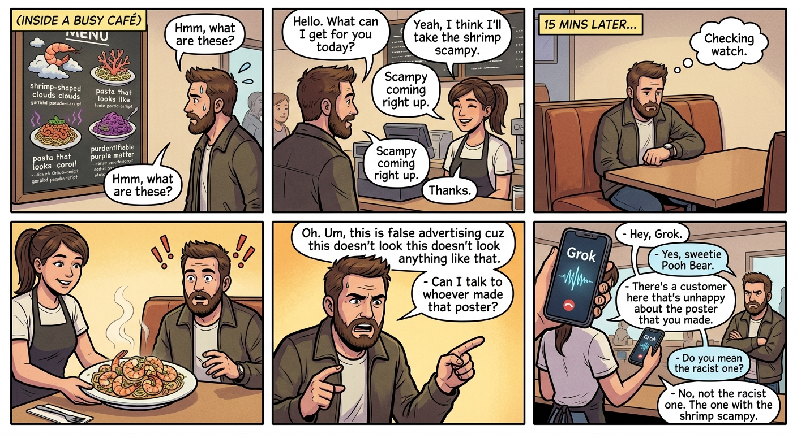
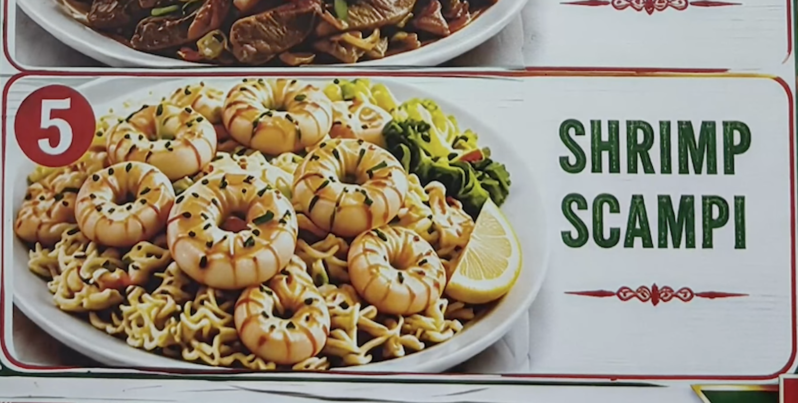
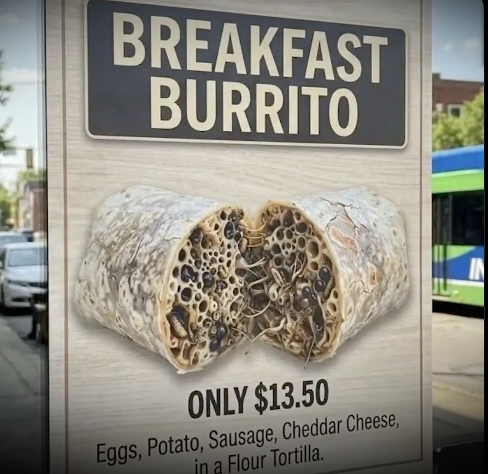
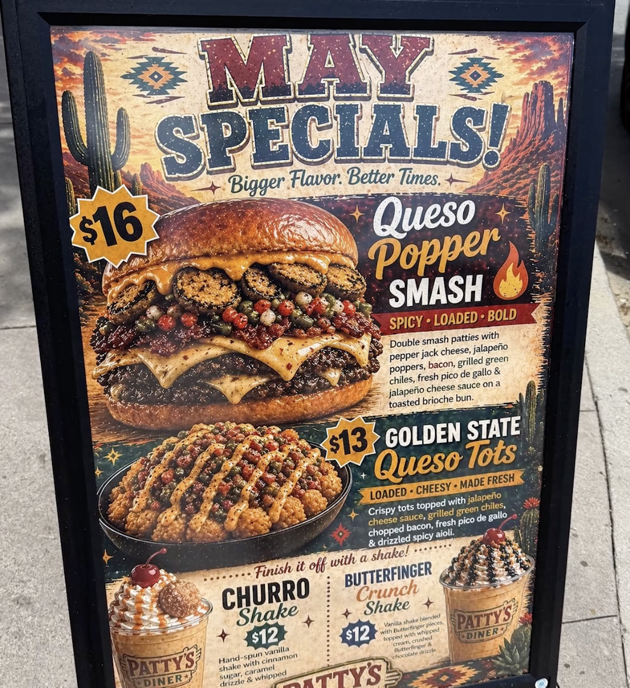

VS:max_bytes(150000):strip_icc()/ALR-recipe-19508-shrimp-scampi-VAT-hero-01-2x1-6ff29365341b471a8c9b0e4dc758ba4c.jpg)
"I am absolutely sick of AI sucking the joy out of everything. It's ruining art, music, writing, and now, for reasons I literally cannot explain, it's coming for our food. AI-generated food images are popping up absolutely everywhere — in restaurant windows, on packaging, on menus. Some of these images give people trypophobia. They kind of look like they were 3D printed in a lab.
I get it. Maybe you're too busy running a restaurant to hire a food photographer. But stock images exist. I typed 'breakfast burrito' into Google Images and found thousands of appetizing, normal photos. So why would you generate this abomination instead?"
And it's just horrifying how every single aspect of food is being literally sloppied by AI. But of course, first we have to start with the AI renditions of food because those seem to be popping up absolutely everywhere. Like this one somebody found in Japan. (X post lower) I'm going to be real with you guys. I've seen crime scene photos less disturbing than whatever this abomination is because at least a crime scene was, you know, humanmade. This this violates the laws of physics. It violates science and I feel like it mocks life itself.


Saw the most disgusting AI poster the other day, completely unappetizing?? Just take a photo of the sandwich you make in the store Jesus Christ https://t.co/whUL0qG1UH
— capsulebunny (@capsulebutt) August 18, 2026

"Believe it or not, there was a time when looking at a picture of food didn't make you want to throw up. Food used to actually be considered an art.
Back in the 16th century, painting food became a massive trend. Artists would spend hours arranging plates of bread, meat, cheese and fruit just to show off their skills. A display like that wasn't just a painting — it was a flex. A succulent spread of food on your wall meant that you had money and you wanted everybody who walked through your front door to know it.
Eventually, we invented cameras. Early food photography was kind of a nightmare — black and white, with dramatic shadows just to make a potato look like a potato. By the 1940s, colour photography exploded. By the 60s and 70s, we had food stylists using glue for milk, motor oil for syrup, and mashed potatoes for ice cream — because real food melts under studio lights.
Then we got smartphones, and suddenly the camera ate first. Restaurants stopped caring about how food tasted and started plating things purely for Instagram.
And today? Instead of appreciating food as a true art form, we've turned it into cheap, low-quality digital slop. We went from artists spending months on a single loaf of bread to computers flooding our feeds with eerily geometric digital illusions that evoke a sense of horror."


| Era | Your answer |
|---|---|
| 16th century | |
| 1820s–1930s | |
| 1940s | |
| 1960s–70s | |
| 2010s | |
| Now |
"If you thought AI-generated food images were bad, wait until you find out about AI-generated recipes. A TikToker found a pastrami baguette that proudly stated on its packaging that its recipe was generated by AI. And it wasn't just the pastrami baguette — the same company also used AI to create a chicken sandwich recipe. Which is, honestly, kind of shocking, considering sandwiches have been around for roughly 2,000 years.
When the company was asked about this choice, they responded: 'The AI serves merely as a tool for implementing market trends. Although AI plays a central role in recipe development, it is ultimately our employees who recognise these trends and refine the recipes. The statement on the packaging that the recipe is AI-generated serves to emphasise our innovative approach and create transparency for customers.'
Online criticism didn't seem to deter them. They anticipated high demand — and their pastrami baguette actually became a bestseller.
But here's the thing: AI models constantly get ingredients wrong. They hallucinate and create recipes based on vibes. They are not a reliable recipe creator. AI doesn't have taste buds. It cannot tell you which sandwich will actually taste good. That's what chefs are for."


1 The product's stated that its recipe was AI-.
2 The Earl of Sandwich invented his meal because of his gambling .
3 The first was made in the first century.
4 AI cannot tell you which food tastes good because it doesn't have .
"In 2023, a Swiss company created a soda called Viv Nova that was fully generated by AI. ChatGPT was responsible for the recipe, the can design was created using the image AI Midjourney, and even the name was AI-generated — with just two requirements: it had to start with 'Viv' and have eight letters.
The AI was tasked with creating a vegan recipe with health benefits. The entire development took only two days, thanks to AI.
Unsurprisingly, the drink was eventually pulled from the market. The CEO stated that 'the initial hype quickly faded.' But critics pointed out a more fundamental problem: if AI is handling the recipe, the design, the name, and the entire branding — why isn't the product cheaper? That should be the pitch: less overhead, less labour, fewer people to hire. A more affordable product. Instead, Viv Nova was priced the same as any other soft drink on the shelf.
And that, perhaps, is the real issue with AI products. Not just that they look or taste wrong — but that consumers get all the downsides of AI and none of the benefits."


1 "For reasons I literally cannot explain"
2 "I'm going to be real with you"
3 "Did nobody stop you and say, 'Hey, what the…?'"
4 "How did we even get here?"
5 "It was a flex"
6 "Addiction is truly the mother of invention"
a — a rhetorical question expressing disbelief at how a situation developed
b — something done to show off wealth or status
c — a humorous twist on "necessity is the mother of invention"
d — an expression of bafflement — there's no logical explanation
e — I'm going to say something honest and direct now
f — disbelief that no one questioned a bad decision
Write a short social media post (150–200 words) responding to this statement:
"AI is just a tool. Using it for food images, recipes, or restaurant branding is no different from using Photoshop or a blender."
Agree, disagree, or find a middle ground. Use at least two examples from what you read today.
The lesson is based on the video of shira: https://youtu.be/O3aybGjkrVY?si=F0l63hNEVA-LMmeO